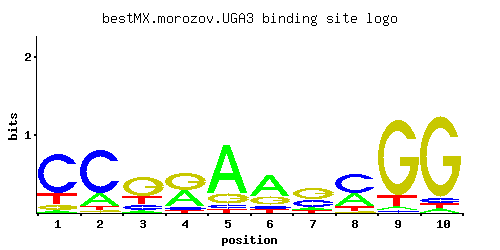

UGA3
YDL170W
Transcriptional activator necessary for gamma-aminobutyrate (GABA)-dependent induction of GABA genes (such as UGA1, UGA2, UGA4); zinc-finger transcription factor of the Zn(2)-Cys(6) binuclear cluster domain type; localized to the nucleus
Best-performing DNA-binding model.

View and copy the recommended matrices ↘
A | 0.042 0.200 0.055 0.408 0.743 0.584 0.106 0.335 0.030 0.042 C | 0.704 0.709 0.150 0.071 0.058 0.104 0.327 0.519 0.020 0.050 G | 0.082 0.037 0.583 0.467 0.150 0.234 0.469 0.033 0.833 0.861 T | 0.172 0.054 0.213 0.054 0.049 0.078 0.098 0.114 0.117 0.047
A | 4 20 5 40 74 58 10 33 3 4 C | 70 70 15 7 5 10 32 51 2 5 G | 8 3 58 46 15 23 46 3 83 86 T | 17 5 21 5 4 7 9 11 11 4
A | -2.03 -0.47 -1.76 0.24 0.84 0.60 -1.10 0.05 -2.37 -2.03 C | 1.36 1.37 -0.18 -0.93 -1.13 -0.55 0.60 1.06 -2.20 -1.28 G | -0.79 -1.58 1.18 0.95 -0.18 0.26 0.96 -1.70 1.53 1.57 T | -0.62 -1.78 -0.41 -1.78 -1.88 -1.41 -1.18 -1.03 -1.01 -1.92
Alternative candidate matrices 6
Historical matrix candidates from the original ScerTF database. Expand a source to inspect its original logo, scores, and matrix values.
UGA3Badis et. al.P = 0.6999View matrix ↘
UGA3_AFoat et. al.P = 1View matrix ↘
UGA3_BFoat et. al.P = 9.53e-07View matrix ↘
UGA3_CFoat et. al.P = 0.01531View matrix ↘
UGA3Harbison et. al.P = 0.3436View matrix ↘
UGA3Macisaac et. alP = 0.3436View matrix ↘
Gene-level annotations and interactions.
Genes bound in ChIP-chip experiments 53 genes
YAL017W, YAL018C, YAL049C, YBL106C, YBR102C, YBR103W, YDL092W, YDL094C, YDL132W, YDL154W, YDL189W, YDL190C, YDL206W, YDR159W, YDR177W, YDR394W, YER105C, YER106W, YFL002W-A, YFL002W-B, YFR023W, YFR057W, YGL083W, YGL084C, YGL115W, YGL227W, YGR017W, YGR188C, YHR016C, YHR017W, YHR123W, YHR164C, YJR083C, YJR084W, YKL078W, YKL080W, YKR102W, YLR273C, YLR274W, YML124C, YMR135W-A, YNL105W, YNL225C, YOL076W, YOL077C, YOR102W, YOR128C, YOR190W, YPL039W, YPL040C, YPL116W, YPL117C, YPL258C
Genes affected by TF deletion 81 genes
YNL275W, YOR377W, YBR005W, YCR009C, YGL166W, YMR009W, YOL014W, YOL016C, YOR220W, YOR226C, YGR120C, YMR189W, YHR053C, YMR316W, YBR093C, YOL139C, YOL109W, YBL026W, YBR288C, YDR281C, YBR010W, YLR284C, YLR257W, YOR385W, YIL117C, YOR202W, YBR166C, YDL135C, YDL075W, YGR161C, YJL124C, YLR097C, YOR327C, YDL170W, YHR215W, YLR194C, YPL156C, YBR101C, YMR112C, YMR142C, YOL149W, YOR298C-A, YPL273W, YAR071W, YBL028C, YDL201W, YER035W, YGL148W, YGR253C, YKL214C, YML063W, YML094W, YML095C-A, YMR321C, YPL117C, YDR210W, YGR136W, YGR142W, YLR292C, YLR294C, YNL031C, YNL096C, YOL032W, YBR174C, YDR209C, YGR135W, YGR137W, YKL120W, YOR052C, YGR019W, YKL001C, YIL066C, YLR172C, YDR481C, YDL241W, YER100W, YGR195W, YLR167W, YPL129W, YBR244W, YNL007C
Genes supported by both experiments 1 genes
YPL117C
Predicted TF–TF partners 3 genes
GIS1, MSN4, RGM1